Guía paso a paso para usar la app desde tu celular
Es la aplicación que te permite reservar tu lugar en la movilidad de la clínica. Desde tu celular podés:
Asegurate de tener a mano:
Si todavía no tenés usuario y contraseña, pedíselos al área de Recursos Humanos o a tu supervisor directo.
Cuando abrís la aplicación por primera vez, ves la pantalla de bienvenida. En la parte de arriba dice "Aplicación Pasajeros".
El cartel grande te pide que ingreses tu usuario y contraseña para empezar a usar la app.
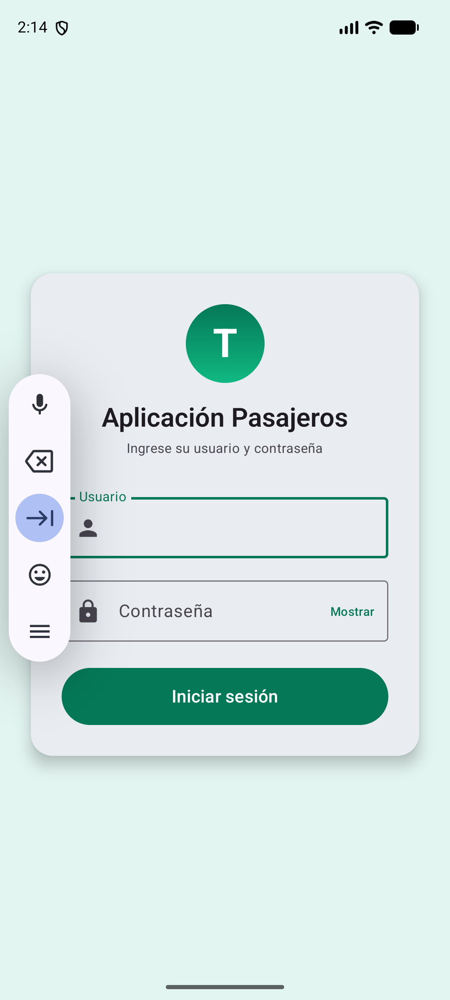
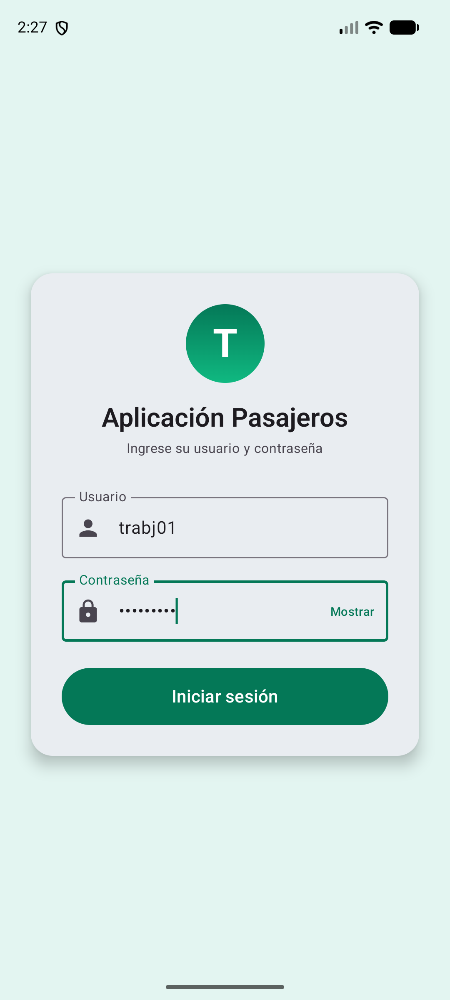
Una vez que entraste con tu usuario, la app te lleva a la pantalla "Buscar viaje". Acá es donde elegís desde dónde salís, hasta dónde vas y qué día.
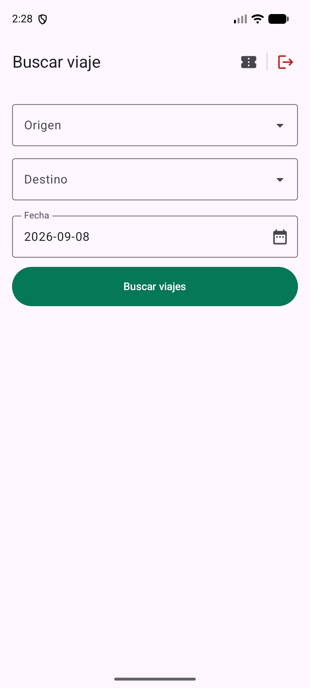
La pantalla tiene tres campos para completar:
Por ejemplo, así se ve cuando tocás el campo Origen y se abre la lista de paradas para elegir:
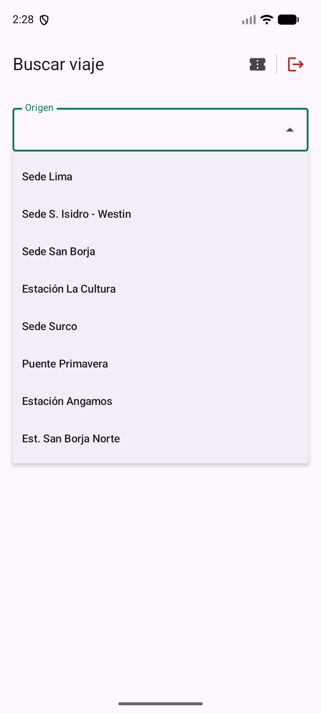
Tocá la parada que quieras para seleccionarla. La lista muestra nombres como "Sede Lima", "Sede San Borja", "Estación La Cultura", etc.
Cuando completes los tres campos, la pantalla se ve así:
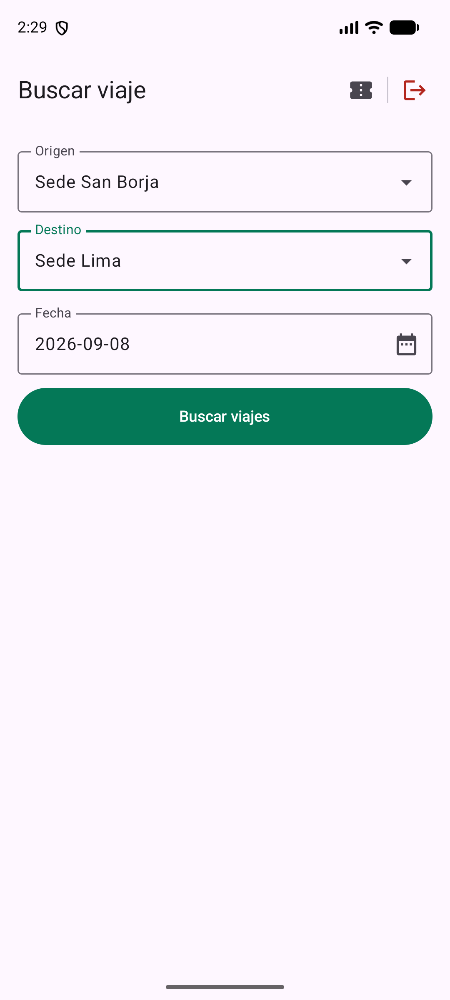
Ahora sí, tocá el botón verde "Buscar viajes" para que la app te muestre los viajes disponibles.
Después de tocar "Buscar viajes", la pantalla te muestra todos los viajes que coinciden con lo que pediste. Cada viaje aparece como una tarjeta con:
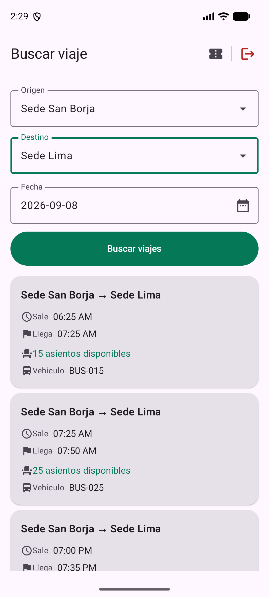
Pasá el dedo hacia arriba en la pantalla para ver más viajes si hay varios. Tocá el viaje que te sirva para pasar a la elección de asiento.
Cuando elegís un viaje, la app te lleva a la pantalla "Selección de asiento". Arriba ves el resumen del viaje (hora de salida, hora de llegada) y abajo aparece el dibujo del vehículo con todos los asientos numerados.
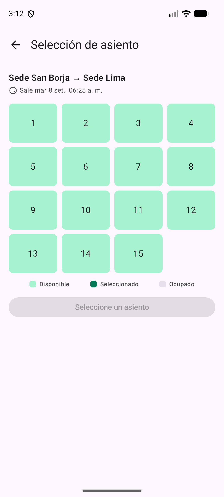
Los asientos aparecen ordenados en una grilla de 4 columnas, igual que las filas de un��. El color de cada uno te avisa el estado:
Para elegir tu lugar:
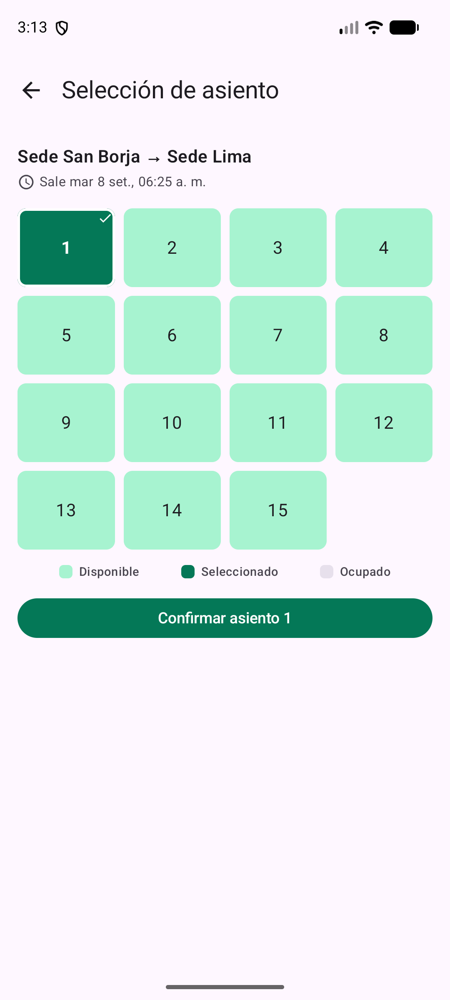
La app te lleva automáticamente a la pantalla "Mi reserva" con el comprobante de la reserva recién hecha. Ahí vas a ver:
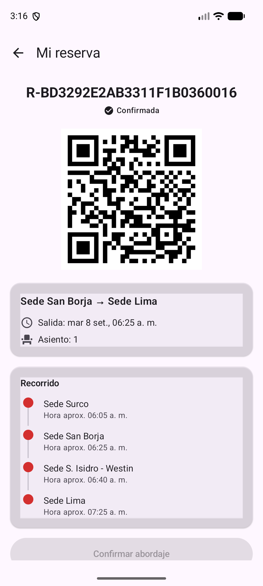
Para ver todas las reservas que tenés hechas, tocá el botón "Mis reservas" que aparece en la parte de arriba a la derecha (es el ícono con una lista).
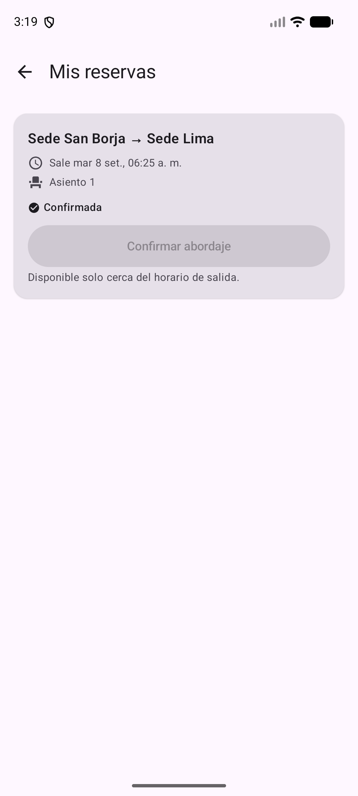
Acá aparece el listado de todas tus reservas. Cada una muestra:
Si todavía no hiciste ninguna reserva, en vez de la lista vas a ver el mensaje:
Tocá una reserva para abrir el detalle completo (el comprobante con el código). Desde ahí también podés cancelarla si ya no la necesitás, tocando el botón correspondiente y confirmando.
Cuando termines de usar la aplicación, es importante cerrar la sesión para que nadie más pueda entrar con tu usuario.
"Usuario o contraseña incorrectos"
Revisá que estés escribiendo bien tu usuario y contraseña. Las mayúsculas y minúsculas importan. Si te confundiste, la app te deja volver a intentarlo las veces que necesites.
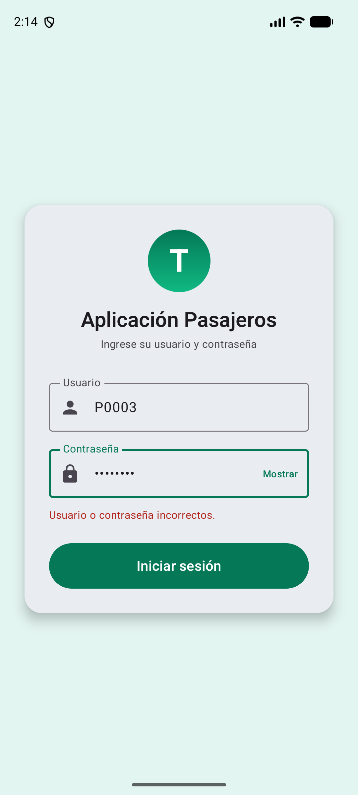
"Complete el usuario y la contraseña"
Este mensaje aparece cuando no llenaste alguno de los dos campos. Tocá el cuadro y escribí lo que falta.
No aparecen viajes en los resultados
Puede pasar que para esa fecha y ese recorrido no haya viajes programados. Probá con otra fecha o cambiá el origen y el destino.
"Sesión expirada"
Por seguridad, después de un rato sin usar la app te pide que vuelvas a iniciar sesión. Tocá el botón, escribí tu usuario y contraseña otra vez, y seguís donde estabas.
¿Otro problema?
Si la app no responde, se cierra sola o te muestra un error que no entendés, comunicate con el área de soporte o con tu supervisor. Es importante que tengas la última versión de la aplicación instalada.